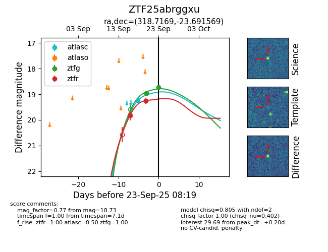

FINK: ZTF25abrggxu
Lasair: ZTF25abrggxu
ALeRCE: ZTF25abrggxu
ZTF25abrggxu (ztf,fink)
equatorial (ra, dec) = (318.7169,-23.69157)
galactic (l, b) = (24.2735,-41.34660)

last atlasc=19.23, ztfg=18.97, ztfr=19.25
1 atlasc, 1 ztfg, 2 ztfr detections